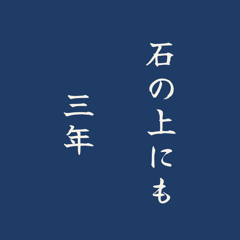

MYDO
Shopify ストアの LINE 接客で、AI が返信を下書きし、店主が確かめてから送るアプリ。
A Shopify app: AI drafts replies to LINE messages, and the shop owner reviews them before sending.
アプリ開発者App Developer
AI と身近なサービスをつなぐ、小さなウェブアプリをつくっています。
I build small web apps that bring AI into everyday tools.
Shopify ストアの LINE 接客で、AI が返信を下書きし、店主が確かめてから送るアプリ。
A Shopify app: AI drafts replies to LINE messages, and the shop owner reviews them before sending.
例文を見比べて仮説を立て、確かめながら英語を学ぶ練習帳。今井むつみ『アブダクション英語学習法』の非公式ファンメイド。
A workbook for learning English by comparing examples, forming hypotheses, and testing them. Unofficial fan-made.

ことわざ・故事成語のステッカーを扱う Shopify ストア。デザイン画像はスクリプトで生成し、注文ごとに Printful で刷って届ける。
A Shopify store of Japanese proverb stickers. Designs are generated by script and printed on demand via Printful.
開店準備中Opening soon
開発で突き当たった壁と、その越え方を note に書いています。
Notes on problems I hit while building, and how I solved them (in Japanese).